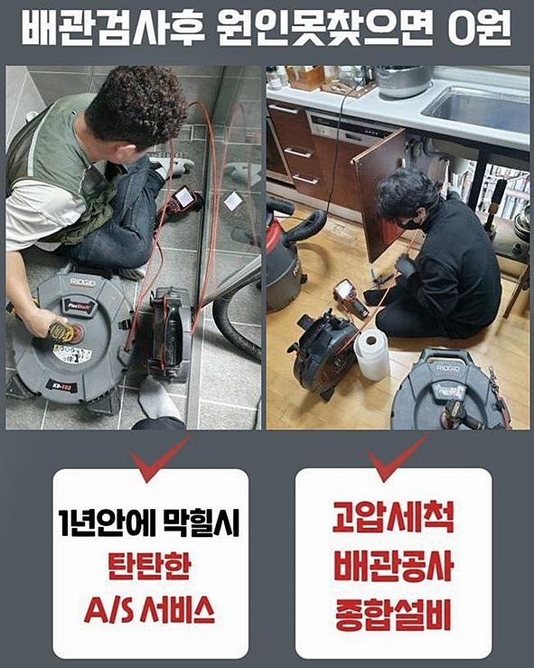
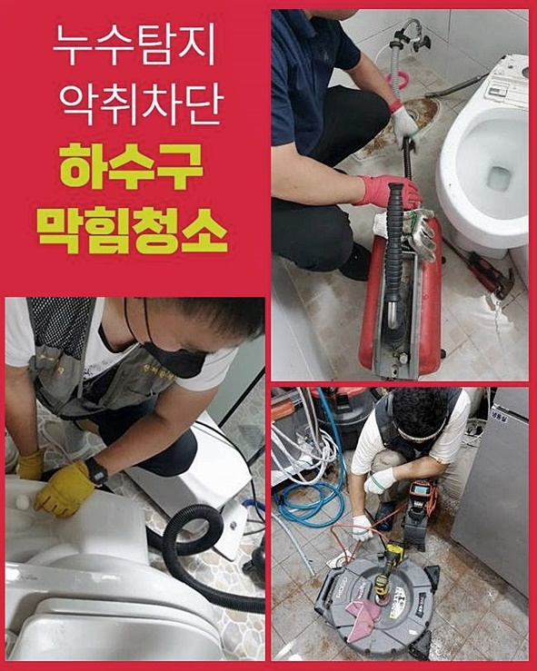
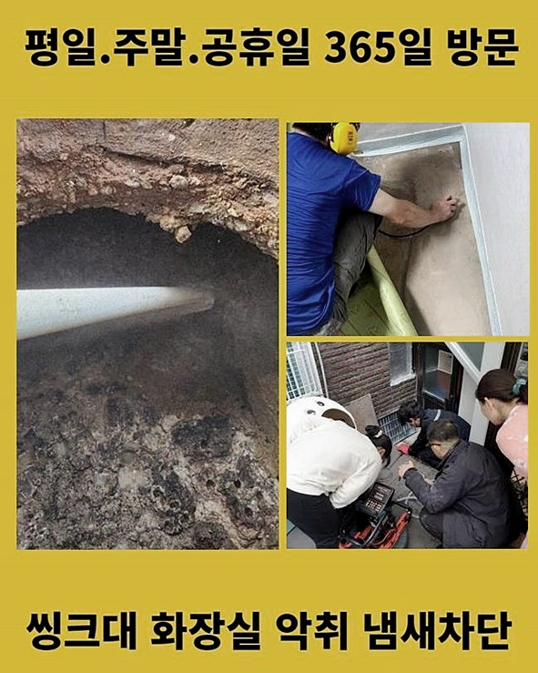
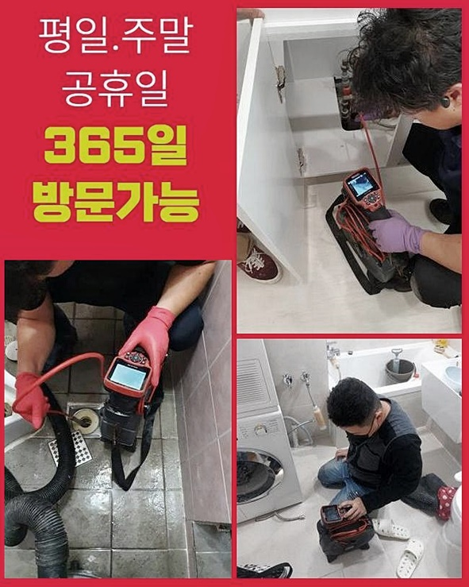
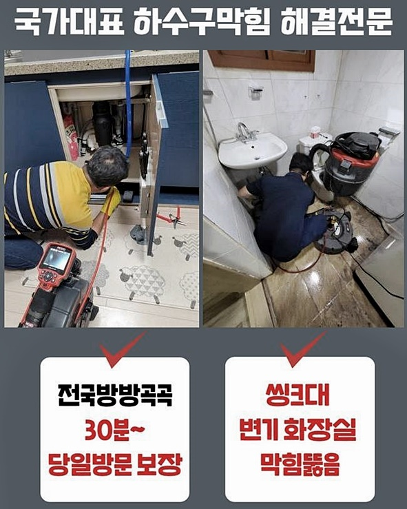
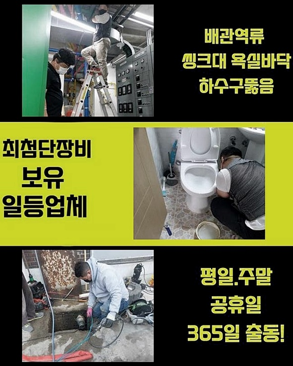
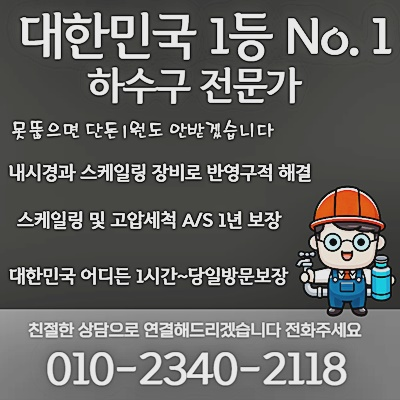

🏠 서정동하수구뚫음 비전동 하수구뚫어주는업체 해결방법
용인 비전동 하수구막힘 전문 시공 후기

📋 작업 개요
- 위치: 용인 비전동, 비전동, 용인
- 서비스 유형: 하수구막힘, 배관막힘, 역류해결, 뚫는업체, 고압세척, 설비공사
- 작업 일시: 2024. 7. 17. 17:25
- 업체명: 하수구수사대 (010-5615-2118)
🔍 문제 상황
서정동하수구뚫음 비전동 하수구뚫어주는업체 해결방법
배관이 막혀버리는 까닭은 여러가지예요
두발뭉치나 음식 건더기로 인해 발현되기도 하고 기름슬러지가 배수관 구석쪽에 적층되고 세월이 지나버려 굳어지게 되어 사용이 어려운 부분도 꽤 나타나고 있습니다
지금부터 실제 방문하였던 장소를 설명드리겠습니다
여기는 설거지 등을 제대로 못하는 문제로 진단을 청하신 상황이었어요
이런 일이 발발하였을 때 뚫어뻥 액상이나 끓인 물 혹은 기다란 막대를 사용해서 문제를 타파하고자 하는 고객분들이 많은 것으로 알고 있는데요
사소한 트러블이라면 극복할 수 있겠으나 다양한 이유들 때문에 막혀버리는 일이 생겼다면 자체적으로 수선하기는 힘들죠
이번에 출장간 막힘처소는 주방 바닥쪽에서 특별히 탁수가 잦게 삼출되고 파이프쪽에서도 정체가 심화되었기에 역류증상이 발현되는 모습이었죠
주방공간은 여과통이 설비돼 있었기에 설거지 과정에서 방출되는 잔재를 일차로 밭치고 나머지만 배수관으로 빠지게끔 세팅해 놓으셨더라고요
그러나 자그마한 유분찌꺼기나 침전물은 분리되지 않고 즉각적으로 배수관으로 유입되죠
이로 인하여 불순물이 조금씩 파이프에 누적되면 내측에서 물이 흐를 수 있는 용적이 지속해서 빽빽해지게 되어서 배관트러블이 나타나죠
전반적인 문제점을 파악하고자 내시경cctv를 안쪽으로 삽입한 이후에 본질적인 문제점을 살피기로 하였죠
주방의 관로는 개수대 하부쪽으로 결부되어 있었어요

🔎 원인 분석
💡 전문가 진단: 정밀 진단 장비를 사용하여 슬러지의 고착 여부를 판명하고 타격/세척 작업을 실시했습니다.
그렇기에 이 문제를 고치기 위해선 그 부분을 개문하여서 검사를 진행해 보아야 합니다
해당 처소처럼 파이프와 통하는 바닥부위에 접근하기 쉬운 상황이면 별도의 절제 작업은 불요하다는 점을 알려드립니다
반면 관로가 복잡하게 구성되어 일반적인 수선이 힘든 구성으로 이뤄진 주방공간은 타공이 추가되기도 해요
해당하는 시공은 현장에 방문하여 면밀하게 형국을 관찰한 뒤에 속행하는 것을 원칙으로 삼으며 타공과 같은 설비 해체 과정은 전부 시공전 의뢰인께 양해를 두한 다음 시행하고 있죠
내시경카메라를 동원하여 들여다 본 배관면의 곳곳엔 다수의 찌꺼기가 잔존해 있었죠
기름슬러지가 층을 이루게 되어 시원스럽게 수돗물이 배출되지 못한 거였죠
보편적으로 유분은 수돗물과 복합되지 않기 때문에 배수관에 기름슬러지가 흘러가면 물처럼 없어지는 것이 아닌 파이프 틈새에 누적되기 쉬운데요
거기에 더해 다른 이물까지 진입하면 파이프 측면부에 단단하게 접착되기에 제거가 더더욱 어려워지죠
한두번 쯤은 이런 문제점을 조금이나마 해결하려 온수를 넣어보셨을 것이라 생각합니다
그렇지만 끓인 물성분은 외려 하수관에 부적절한 영향력을 전달하기도 합니다
보통 아파트나 빌라 안에 매립되는 하수관은 거개 플라스틱 계열인데 해당하는 부품은 뜨거운 물에 견디는 힘이 약해요
그렇기 때문에 끊인 물성분을 넣어버리면 관로가 충격을 받아서 부러지거나 훼손되기도 합니다
따라서 끓인 물 말고 구조적인 변화를 꾀하여 안전히 슬러지를 쇄소하는 모습이 배수관 정체현상을 고치는 키라고 볼 수 있습니다

🔧 작업 과정
이 문제를 안전하게 수선할 수 있는 기계는 고속 샤프트설비입니다
이 기기는 내측에 머물던 이물을 파쇄하는 목적을 가지고 있으며 얇고 강한 노즐과 강력한 체인으로 이루어졌고 담당자가 목표를 확정한 다음에 노즐을 가동하게 하면 쇠사슬 모양의 부속이 하수관의 이물들을 제거합니다
부품에는 특별하게 충격을 가하지않는 설비긴 하지만 어떤 방식으로 다루는지에 의하여 가끔 문제가 발현될 수 있습니다
따라서 저희측에서도 초심자의 마음으로 전 과정을 실시하고 있답니다
기나긴 세월 동안 누증된 기름물질은 단 몇 분만의 분쇄만으로 소쇄하기에는 역경이 큽니다
그러므로 반복적인 시공에 의존해서 소거해 나가야 한답니다
답답한 막힘을 일으켰던 기름슬러지들을 샤프트기기를 동원해 수차례 없애나가다보면 점차적으로 완결성 있는 상태로 변모해요
다음에 배관촬영설비를 투입하여서 잔류하는 침전물을 진단해 줍니다
다수의 유분이 가득찼던 배수관이 청결해졌다는 걸 확인하실 수가 있죠
약간의 이물이라도 관로에 체류하는 일이 생긴다면 몇 주 지난 뒤에 또다시 배관이 막혀버리는데요
음식물 쓰레기 등에서 나오는 성분과 쉽게 결합하고 덩어리지고 결과적으로 통수를 막게 되는거죠
이 때문에 처음 소제할 때 소량의 찌꺼기라도 잔류 못하도록 착실하게 세척하는 게 좋습니다
반복하여 소제를 실시하면 어느덧 파이프가 뚫리게 되는데요
역류상황과 막힘을 동시에 유발하던 이물들이 깨끗하게 소멸되는 것을 직시하였고 촬영된 모습을 의뢰인에게도 보게해 드렸네요
손님도 기기의 화면을 꼼꼼하게 검수하셨으며 해당 공사의 전 과정을 인지할 수 있었죠
이렇게 업무 전반을 솔직한 자세로 오픈하므로 불편함이 없는 서비스를 받으실 수가 있는 것입니다
해당현장의 배관트러블을 완료한 뒤엔 물빠짐 속도 평가를 행하여야 합니다
이것을 검토하기 위하여 배수관 초입을 커버 등으로 닫은채로 수돗물을 20리터 이상 채워 일거에 부으면 성공 연부를 파악할 수 있습니다
수분이 잘 안빠지고 간혹 역류증세까지 보였는데 샤프트공구를 사용하여 용이하게 끝마치게 되었어요
신뢰감있는 공사를 원하신다면 정당하게 시공해내는 업체의 조력이 요망돼요


✅ 작업 완료
숙련된 기술력을 기초로 신뢰할 만한 배관통수 전문가의 조력을 통하여 살뜰하게 처리할 수 있죠
모든 조치를 완료하고 현장 근방의 세척도 속행하고나서 하수관 시공 현장을 끝맺었어요
기기를 가동하면서 근방에 노폐물이 흩어지고 각종 유독물질이 상존할 가능성도 있기 때문에 이것에 대한 소독도 반드시 공사 뒤 진행합니다
이번 하수도 뚫음 현장처럼 건조물 내측에서 정리할만한 곳이면 관계없지만 배관 하단부위까지 노폐물로 들어차 있는 경우엔 물세척 공정이 가증되기도 한답니다
디테일한 내용은 시공 후에 진단을 통해서 진솔하게 말씀드릴 예정이니 방문 방문을 요청하길 바랍니다
배관 공사과 관련된 의뢰하실 사안이 존재한다면 빨간날이라도 말씀해 주셔도 무방합니다




⚠️ 하수구 배관 막힘 예방 및 관리 가이드
- ✅ 머리카락, 비닐, 물티슈 등 물에 분해되지 않는 이물질은 하수구 유입을 절대 금지해 주세요.
- ✅ 하수구 거름망을 씌우고 모여진 이물질은 주기적으로 쓰레기통에 바로 비워주셔야 합니다.
- ✅ 배관 노후가 심할 경우 이물질이 더 쉽게 걸리므로 주기적인 배관 세척(고압세척 등)을 권장합니다.
- ✅ 작업 후 1년 이내 재발 시 하수구수사대에서 무상 A/S 보증 서비스를 제공합니다.
💡 핵심 정리
- 확실한 장비 작업(내시경 점검 및 샤프트 스케일링)으로 원인을 뿌리 뽑습니다.
- 작업 후 1년 이내에 동일한 부위 재발 시 100% 무상 A/S 서비스를 보장합니다.
- 서울 · 경기 · 인천 전 지역에 24시간 언제든 긴급 출동할 수 있도록 항시 대기 중입니다.
❓ 자주 묻는 질문 (FAQ)
🚨 용인 비전동 하수구막힘 문제로 고민이신가요?
정확한 원인 진단과 확실한 시공으로 재발 없는 해결을 약속드립니다.
24시간 긴급 출동 | 서울 · 경기 · 인천 전지역 | 1년 내 재발 시 무상 A/S